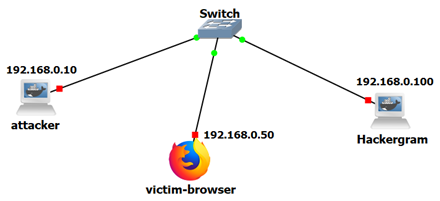

Lab Setup
Read before deploying
Hackergram is intentionally vulnerable. Deploy it only in an isolated, controlled environment, and never expose it to the public Internet. See Safety and Ethical Use for the full guidance.
The laboratory environment is designed for local deployment on a single host. Hackergram runs as a Python web application, and users interact with it through a standard web browser. Some attacks are launched through auxiliary Python scripts, while others may additionally use an intercepting proxy such as Burp Suite or OWASP ZAP to observe and manipulate HTTP traffic. For the LLM-integrated functionality, Ollama is installed locally and provides the model-serving interface consumed by Hackergram. In this single-host setup, the application, browser, proxy, and LLM service can communicate through the loopback interface (e.g., localhost or 127.0.0.1) using distinct ports, which simplifies deployment and improves reproducibility in a controlled experimental environment.
The source code for Hackergram is available on GitHub at netexperiments/hackergramlab; the attack scripts used in the experiments are included on each attack page of this site.
Choosing a deployment
| Deployment | Docker image(s) | Classical attacks | LLM attacks | GNS3 | Recommended use |
|---|---|---|---|---|---|
| Simple | pimz23/hackergram-simple:latest |
Yes¹ | No | No | Fastest introduction |
| Full | pimz23/hackergram30:latest |
Yes | Yes | No | Complete single-host experimentation |
| GNS3 | pimz23/hackergram30:latest, pimz23/my-gns3-attacker:1.5, pimz23/zap-desktop-novnc:latest, gns3/webterm:latest |
Yes | Yes | Yes | Networked experiments |
¹ The simple image has no Ollama and none of the LLM endpoints (/leaderboard, /ai_summarize,
/generate_post, /chatlog), so any exercise that relies on those endpoints needs the full image.
In the GNS3 deployment, Ollama and both models run inside the Hackergram container (the same
pimz23/hackergram30 image), so the LLM experiments work there too. To get started quickly with either
single-host option, follow the Quick Start.
Docker Containers
Two Docker containers are provided through Docker Hub to facilitate deployment.
Simple Hackergram
The Simple Hackergram container offers a lightweight version of the application containing only the core web application and its essential dependencies. It does not include the LLM integration, making it suitable for introductory exercises that cover the foundational vulnerability categories and easier to deploy on machines with limited resources.
Full Hackergram
The full Hackergram container provides the complete version of the lab, including the additional components required for the full set of experiments, including LLM-integrated attacks. Distributing both variants as containers improves portability, reproducibility, and ease of deployment across different systems.
GNS3 Deployment
The experiments can also be deployed in GNS3 using the provided Docker containers. The network scenario for the GNS3 topology is shown below.

To simplify this process, an automation script developed using the GNS3 API is available through this website. It configures the GNS3 environment and instantiates the required lab topology automatically, reducing manual setup effort and improving reproducibility.
GNS3 Prerequisites
Before setting up the GNS3 topology, ensure the following components are installed and configured:
- GNS3: The main network simulation platform must be installed on your host system
- GNS3 VM: The GNS3 Virtual Machine should be installed and configured on VMware (recommended for optimal performance and compatibility)
- VMware: VMware Workstation (Windows/Linux) or VMware Fusion (macOS) is the recommended hypervisor for running the GNS3 VM
GNS3 Setup Script
GNS3 Setup Script
Before setting up the lab topology, you need to add the required Docker containers to GNS3:
- Add the Hackergram Attacker container:
- In GNS3, go to the settings/preferences
- Navigate to Docker containers section
-
Add the container:
pimz23/my-gns3-attacker:1.5 -
Add the Hackergram application container:
- In the same Docker containers section
- Add the container:
pimz23/hackergram30(available at https://hub.docker.com/repository/docker/pimz23/hackergram30)
Once both containers are added to GNS3, you can proceed with creating the lab topology using these containers.
Ensure that both GNS3 and the GNS3 VM are running, then execute the script HackergramLabTopology.py shown below. Set the GNS3_PASSWORD environment variable to your own GNS3 VM password before running it (e.g. GNS3_PASSWORD=<your-password> python HackergramLabTopology.py). You can usually find this password in the gns3_server.ini file located at C:\Users\YourUser\AppData\Roaming\GNS3\2.2\gns3_server.ini.
import os
import requests
import time
# GNS3 Server API Endpoint
GNS3_SERVER = "http://localhost:3080/v2"
USERNAME = "admin"
PASSWORD = os.environ["GNS3_PASSWORD"] # set via: GNS3_PASSWORD=<your-password>
TEMPLATES = None
# GNS3 Authentication
auth = (USERNAME, PASSWORD)
# Project and container settings
PROJECT_NAME = "gns3_hackergram_lab"
# GNS3 template names (must match the names given when adding each Docker image to GNS3)
HACKERGRAM_TEMPLATE = "pimz23-hackergram30"
ATTACKER_TEMPLATE = "pimz23-my-gns3-attacker"
ZAP_TEMPLATE = "pimz23-zap-desktop-novnc"
WEBTERM_TEMPLATE = "webterm"
def get_project_id():
"""Check if a project with the given name exists and return its ID."""
response = requests.get(f"{GNS3_SERVER}/projects", auth=auth)
response.raise_for_status()
projects = response.json()
for project in projects:
if project["name"] == PROJECT_NAME:
return project["project_id"]
return None
def delete_project(project_id):
"""Delete an existing project by ID."""
requests.delete(f"{GNS3_SERVER}/projects/{project_id}", auth=auth).raise_for_status()
print(f"Deleted existing project: {PROJECT_NAME}")
def create_project(custom_name=None):
"""Create a new GNS3 project"""
project_name = custom_name if custom_name else PROJECT_NAME
response = requests.post(f"{GNS3_SERVER}/projects", json={"name": project_name}, auth=auth)
response.raise_for_status()
project_data = response.json()
print(f"Project UUID: {project_data['project_id']}")
return project_data["project_id"]
def add_switch(project_id):
"""Add an Ethernet switch"""
try:
print("Adding Ethernet switch...")
switch_config = {
"name": "Lab_Switch",
"node_type": "ethernet_switch",
"compute_id": "vm",
"x": 0, "y": 0
}
response = requests.post(f"{GNS3_SERVER}/projects/{project_id}/nodes", json=switch_config, auth=auth)
if response.status_code != 201:
print(f"ERROR: Failed to create switch. Status: {response.status_code}")
print(f"Response: {response.text}")
return -1
switch_id = response.json()["node_id"]
print(f"Successfully created switch with ID: {switch_id}")
return switch_id
except requests.RequestException as e:
print(f"Failed to add switch: {e}")
if 'response' in locals():
print(f"Status code: {response.status_code}")
print(f"Response content: {response.text}")
return -1
def get_docker_image(template_id):
global TEMPLATES
for template in TEMPLATES:
if template["template_id"]==template_id:
return template["image"]
print(f"Template {template_id} docker image not found")
return -1
def get_templates():
global TEMPLATES
try:
templates = requests.get(f"{GNS3_SERVER}/templates", auth=auth)
templates.raise_for_status()
TEMPLATES = templates.json()
print(f"Retrieved {len(TEMPLATES)} templates")
return TEMPLATES
except requests.RequestException as e:
print(f"Error retrieving templates: {e}")
TEMPLATES = []
return []
def get_template_id(template_name):
global TEMPLATES
if not TEMPLATES:
get_templates()
for template in TEMPLATES:
if template_name.lower() == template["name"].lower():
print(f"Found template: {template['name']} (ID: {template['template_id']})")
return template["template_id"]
print(f"Template '{template_name}' not found. Available templates:")
for template in TEMPLATES:
print(template["name"])
return None
def add_docker_container(project_id, container_name, template_id, image=None, x=0, y=0):
"""Add a Docker container using the specified template"""
try:
print(f"Adding container '{container_name}' with template ID: {template_id}")
# Check if template_id is valid
if template_id is None:
print(f"ERROR: Template ID is None for container '{container_name}'")
return -1
# Step 1: Create node from template
node_data = {"x": x, "y": y, "name": container_name}
response = requests.post(f"{GNS3_SERVER}/projects/{project_id}/templates/{template_id}",
json=node_data, auth=auth)
if response.status_code != 201:
print(f"ERROR: Failed to create node from template. Status: {response.status_code}")
print(f"Response: {response.text}")
return -1
data = response.json()
node_id = data["node_id"]
print(f"Successfully created node with ID: {node_id}")
return node_id
except requests.RequestException as e:
print(f"Failed to add container '{container_name}': {e}")
if 'response' in locals():
print(f"Status code: {response.status_code}")
print(f"Response content: {response.text}")
return -1
except Exception as e:
print(f"Unexpected error adding container '{container_name}': {e}")
return -1
def start_node(project_id, node_id):
"""Start a GNS3 node"""
requests.post(f"{GNS3_SERVER}/projects/{project_id}/nodes/{node_id}/start", auth=auth).raise_for_status()
def list_all_templates():
try:
response = requests.get(f"{GNS3_SERVER}/templates", auth=auth)
response.raise_for_status()
templates = response.json()
print("Installed Templates:")
for template in templates:
template_type = template.get('template_type', 'unknown')
compute_id = template.get('compute_id', 'unknown')
print(f"- Name: {template['name']} (ID: {template['template_id']}) [Type: {template_type}, Compute: {compute_id}]")
print(f"\nTotal Templates: {len(templates)}")
return templates
except Exception as e:
print(f"Error retrieving templates: {e}")
return []
def debug_template_details(template_id):
"""Get detailed information about a specific template"""
try:
response = requests.get(f"{GNS3_SERVER}/templates/{template_id}", auth=auth)
response.raise_for_status()
template = response.json()
print(f"Template Details for {template_id}:")
for key, value in template.items():
print(f" {key}: {value}")
return template
except Exception as e:
print(f"Error getting template details: {e}")
return None
def list_compute_engines():
"""List available compute engines"""
try:
response = requests.get(f"{GNS3_SERVER}/computes", auth=auth)
response.raise_for_status()
computes = response.json()
print("Available Compute Engines:")
for compute in computes:
print(f"- ID: {compute['compute_id']}, Name: {compute['name']}, Connected: {compute['connected']}")
return computes
except Exception as e:
print(f"Error getting compute engines: {e}")
return []
def add_note(project_id, text, x=0, y=0, font_size=12, color="#000000"):
"""Add a text note/label to the topology at specified coordinates"""
try:
print(f"Adding note '{text}' at position ({x}, {y})")
# Create SVG text element - GNS3 expects SVG format
svg_content = f'<svg height="{font_size + 5}" width="{len(text) * font_size // 2}"><text x="0" y="{font_size}" fill="{color}" font-size="{font_size}" font-family="Arial">{text}</text></svg>'
note_data = {
"x": x,
"y": y,
"z": 1, # Layer (higher z values appear on top)
"rotation": 0,
"svg": svg_content
}
response = requests.post(f"{GNS3_SERVER}/projects/{project_id}/drawings",
json=note_data, auth=auth)
if response.status_code == 201:
drawing_id = response.json()["drawing_id"]
print(f"Successfully added note with ID: {drawing_id}")
return drawing_id
else:
print(f"Failed to add note. Status: {response.status_code}")
print(f"Response: {response.text}")
return None
except requests.RequestException as e:
print(f"Error adding note: {e}")
return None
def add_multiple_notes(project_id, notes_list):
"""Add multiple notes to the topology
Args:
project_id: GNS3 project ID
notes_list: List of dictionaries with note parameters
[{"text": "Note text", "x": 0, "y": 0, "font_size": 12, "color": "#000000"}, ...]
"""
note_ids = []
for note in notes_list:
note_id = add_note(
project_id,
note.get("text", ""),
note.get("x", 0),
note.get("y", 0),
note.get("font_size", 12),
note.get("color", "#000000")
)
if note_id:
note_ids.append(note_id)
print(f"Added {len(note_ids)} notes to the topology")
return note_ids
def create_webterm_template():
"""Create a webterm template using a common webterm Docker image"""
# First, check what compute engines are available and find the best one
computes = list_compute_engines()
# Prefer 'vm' compute if available (for consistency with other containers), otherwise use 'local'
compute_id = "local" # default
for compute in computes:
if compute['compute_id'] == 'vm' and compute['connected']:
compute_id = "vm"
break
print(f"Using compute engine: {compute_id}")
# Try different webterm images in order of preference
webterm_images = [
"gns3/webterm:latest",
]
for image in webterm_images:
try:
print(f"Trying to create WebTerm template with image: {image}")
# Adjust console settings based on image
if "ubuntu" in image.lower():
console_type = "telnet"
console_http_port = None
console_http_path = None
else:
console_type = "http"
console_http_port = 3000
console_http_path = "/"
template_data = {
"name": "webterm",
"template_type": "docker",
"compute_id": compute_id,
"image": image,
"console_type": console_type,
"adapters": 1,
"start_command": "",
"environment": "",
"extra_hosts": "",
"extra_volumes": []
}
# Add HTTP console settings only for web terminals
if console_type == "http":
template_data["console_http_port"] = console_http_port
template_data["console_http_path"] = console_http_path
response = requests.post(f"{GNS3_SERVER}/templates", json=template_data, auth=auth)
if response.status_code == 201:
template_id = response.json()["template_id"]
print(f"Successfully created WebTerm template with ID: {template_id} using image: {image}")
return template_id
else:
print(f"Failed with image {image}. Status: {response.status_code}")
continue
except requests.RequestException as e:
print(f"Error with image {image}: {e}")
continue # Try next image
print("Failed to create WebTerm template with any available image")
return None
def connect_nodes(project_id, node1_id, node1_port, node2_id, node2_port):
"""Connect two nodes directly"""
try:
connection_data = {
"nodes": [
{
"adapter_number": 0,
"node_id": node1_id,
"port_number": node1_port
},
{
"adapter_number": 0,
"node_id": node2_id,
"port_number": node2_port
}
]
}
response = requests.post(
f"{GNS3_SERVER}/projects/{project_id}/links",
json=connection_data,
auth=auth
)
response.raise_for_status()
print(f"Connected node {node1_id} to node {node2_id}")
except requests.RequestException as e:
print(f"Failed to connect nodes: {e}")
if hasattr(e, 'response'):
print(f"Response content: {e.response.text}")
def start_node(project_id, node_id):
"""Start a GNS3 node"""
try:
response = requests.post(
f"{GNS3_SERVER}/projects/{project_id}/nodes/{node_id}/start",
auth=auth
)
response.raise_for_status()
print(f"Started node {node_id}")
except requests.RequestException as e:
print(f"Failed to start node {node_id}: {e}")
def create_startup_script_for_containers():
"""Create startup scripts that will configure IPs when containers boot"""
try:
print("Creating container startup IP configuration...")
# Create a script that can be executed inside containers
startup_script = '''#!/bin/bash
# Container IP Configuration Script
echo "Configuring container network..."
# Function to configure IP for current container
configure_ip() {
local ip_address=$1
echo "Setting IP address to $ip_address"
# Remove any existing IP configuration
ip addr flush dev eth0 2>/dev/null || true
# Configure new IP address
ip addr add $ip_address/24 dev eth0
ip link set eth0 up
echo "IP configuration complete: $ip_address"
}
# Check hostname or container name to determine IP
HOSTNAME=$(hostname)
case "$HOSTNAME" in
*hackergram*|*Hackergram*)
configure_ip "192.168.0.100"
;;
*attacker*|*Attacker*)
configure_ip "192.168.0.10"
;;
*zap*|*ZAP*|*novnc*)
configure_ip "192.168.0.20"
;;
*webterm*|*WebTerm*)
configure_ip "192.168.0.50"
;;
*)
echo "Unknown container type: $HOSTNAME"
echo "Please configure IP manually"
;;
esac
'''
with open("container_ip_config.sh", "w") as f:
f.write(startup_script)
import os
os.chmod("container_ip_config.sh", 0o755)
print("Created container_ip_config.sh script")
return True
except Exception as e:
print(f"Failed to create startup script: {e}")
return False
def get_container_docker_info(project_id, node_id):
"""Get Docker container information for direct configuration"""
try:
# Get node information from GNS3
response = requests.get(f"{GNS3_SERVER}/projects/{project_id}/nodes/{node_id}", auth=auth)
if response.status_code == 200:
node_info = response.json()
container_id = node_info.get('properties', {}).get('container_id')
return container_id
return None
except Exception as e:
print(f"Failed to get container info: {e}")
return None
def configure_container_network(project_id, node_id, container_name, ip_address):
"""Configure network settings for a Docker container"""
try:
print(f"Attempting to configure {container_name} with IP {ip_address}")
# Get container ID
container_id = get_container_docker_info(project_id, node_id)
if container_id:
print(f"Found container ID: {container_id}")
print(f"To manually configure this container, run:")
print(f" docker exec {container_id} ip addr add {ip_address}/24 dev eth0")
print(f" docker exec {container_id} ip link set eth0 up")
else:
print(f"Could not retrieve container ID for {container_name}")
# Since GNS3 API doesn't support direct IP configuration,
# we'll provide instructions for manual configuration
print(f"Note: Automatic IP configuration via GNS3 API is not supported.")
print(f"Use the GNS3 GUI to configure {container_name} manually:")
print(f" 1. Right-click {container_name} → Edit config")
print(f" 2. Set static IP: {ip_address}/24")
print(f" 3. Netmask: 255.255.255.0 (no gateway needed)")
print(f" 4. Save and restart container")
return True
except Exception as e:
print(f"Error with {container_name}: {e}")
return False
def set_node_ip(project_id, node_id, ip_cidr, ifname="eth0"):
"""Configure IP address by sending commands to the container console"""
try:
print(f"Configuring IP {ip_cidr} for node {node_id}")
# Commands to configure IP address
commands = [
f"ip link set {ifname} up",
f"ip addr flush dev {ifname}",
f"ip addr add {ip_cidr} dev {ifname}",
]
# Send each command to the node's console
for cmd in commands:
try:
# Send command via console
console_data = {"command": cmd + "\n"}
response = requests.post(
f"{GNS3_SERVER}/projects/{project_id}/nodes/{node_id}/console/send",
json=console_data,
auth=auth
)
if response.status_code == 200:
print(f" ✓ Executed: {cmd}")
else:
print(f" ✗ Failed: {cmd} (Status: {response.status_code})")
except requests.RequestException as e:
print(f" ✗ Error executing {cmd}: {e}")
print(f"IP configuration completed for {ip_cidr}")
return True
except Exception as e:
print(f"Failed to configure IP for node {node_id}: {e}")
return False
def main():
existing_project_id = get_project_id()
if existing_project_id:
delete_project(existing_project_id)
project_id = create_project()
print(f"Created project: {PROJECT_NAME} (ID: {project_id})")
get_templates()
# Show all available templates with details
print("\n=== All Available Templates ===")
list_all_templates()
switch_id = add_switch(project_id)
print(f"Added Ethernet switch: {switch_id}")
# Retrieve template IDs
print("\n=== Retrieving Template IDs ===")
hackergram_template_id = get_template_id(HACKERGRAM_TEMPLATE)
attacker_template_id = get_template_id(ATTACKER_TEMPLATE)
zap_template_id = get_template_id(ZAP_TEMPLATE)
webterm_template_id = get_template_id(WEBTERM_TEMPLATE)
# Log which templates were found
if zap_template_id:
print(f"✓ Found ZAP Desktop template: {zap_template_id}")
else:
print("✗ ZAP Desktop template not found - will skip ZAP container")
# If no webterm template found, try to create one
if not webterm_template_id:
print("No WebTerm template found, attempting to create one...")
webterm_template_id = create_webterm_template()
if webterm_template_id:
# Refresh templates after creation
get_templates()
# Add containers using correct template IDs
print("\n=== Adding Docker Containers ===")
hackergram_node_id = add_docker_container(project_id, "Hackergram", hackergram_template_id, image=get_docker_image(hackergram_template_id), x=-400, y=200)
attacker_node_id = add_docker_container(project_id, "Attacker", attacker_template_id, image=get_docker_image(attacker_template_id), x=400, y=200)
# Add ZAP container if template is available
if zap_template_id:
zap_node_id = add_docker_container(project_id, "ZAP-Desktop", zap_template_id, image=get_docker_image(zap_template_id), x=-400, y=400)
print(f"Added ZAP Desktop with ID: {zap_node_id}")
else:
zap_node_id = -1
print("ZAP Desktop template not found, skipping ZAP creation")
# Add webterm if template is available
if webterm_template_id:
webterm_node_id = add_docker_container(project_id, "WebTerm", webterm_template_id, x=0, y=400)
print(f"Added WebTerm with ID: {webterm_node_id}")
else:
webterm_node_id = -1
print("WebTerm template not found, skipping WebTerm creation")
# Connect containers to the switch
print("\n=== Connecting Nodes ===")
port_counter = 0
if hackergram_node_id != -1:
connect_nodes(project_id, switch_id, port_counter, hackergram_node_id, 0)
port_counter += 1
else:
print("Skipping Hackergram connection (container creation failed)")
if attacker_node_id != -1:
connect_nodes(project_id, switch_id, port_counter, attacker_node_id, 0)
port_counter += 1
else:
print("Skipping Attacker connection (container creation failed)")
if zap_node_id != -1:
connect_nodes(project_id, switch_id, port_counter, zap_node_id, 0)
port_counter += 1
print("Connected ZAP Desktop to switch")
else:
print("Skipping ZAP Desktop connection (container creation failed)")
if webterm_node_id != -1:
connect_nodes(project_id, switch_id, port_counter, webterm_node_id, 0)
port_counter += 1
print("Connected WebTerm to switch")
else:
print("Skipping WebTerm connection (container creation failed)")
# Start all nodes
print("\n=== Starting Nodes ===")
start_node(project_id, switch_id)
if hackergram_node_id != -1:
start_node(project_id, hackergram_node_id)
else:
print("Skipping Hackergram startup (container creation failed)")
if attacker_node_id != -1:
start_node(project_id, attacker_node_id)
else:
print("Skipping Attacker startup (container creation failed)")
if zap_node_id != -1:
start_node(project_id, zap_node_id)
print("Started ZAP Desktop")
else:
print("Skipping ZAP Desktop startup (container creation failed)")
if webterm_node_id != -1:
start_node(project_id, webterm_node_id)
print("Started WebTerm")
else:
print("Skipping WebTerm startup (container creation failed)")
print("All nodes started and connected.")
# Wait for containers to fully initialize before configuring IPs
print("\n=== Waiting for containers to fully initialize ===")
time.sleep(15)
# Create IP configuration script and provide instructions
print("\n=== Creating IP Configuration Resources ===")
create_startup_script_for_containers()
print("\n=== Container Information for Manual IP Configuration ===")
if hackergram_node_id != -1:
set_node_ip(project_id, hackergram_node_id, "192.168.0.100/24")
if attacker_node_id != -1:
set_node_ip(project_id, attacker_node_id, "192.168.0.10/24")
if zap_node_id != -1:
set_node_ip(project_id, zap_node_id, "192.168.0.20/24")
if webterm_node_id != -1:
set_node_ip(project_id, webterm_node_id, "192.168.0.50/24")
# Add IP address notes to the topology
print("\n=== Adding IP Address Notes ===")
add_note(project_id, "192.168.0.100", x=-400, y=150, font_size=12, color="#006600")
add_note(project_id, "192.168.0.10", x=400, y=150, font_size=12, color="#CC0000")
add_note(project_id, "192.168.0.20", x=-400, y=480, font_size=12, color="#CC6600")
add_note(project_id, "192.168.0.50", x=0, y=480, font_size=12, color="#666666")
print("\n=== IP Configuration Complete ===")
time.sleep(5)
print("\n" + "="*60)
print("LAB SETUP COMPLETE!")
print("="*60)
print("All containers created and started")
print("Network connections established")
print("Visual IP labels added to topology")
print("Configuration script created: container_ip_config.sh")
print("")
print("MANUAL IP CONFIGURATION REQUIRED:")
print(" GNS3 API doesn't support automatic IP configuration.")
print(" Configure each container manually:")
print("")
print("Method 1 - Via GNS3 GUI:")
print(" 1. Right-click each container → Edit config")
print(" 2. Set static IP addresses as shown in labels")
print(" 3. Netmask: 255.255.255.0 (no gateway needed)")
print(" 4. Save and restart containers")
print("")
print("Method 2 - Via Docker commands:")
print(" Use the docker exec commands shown above")
print("")
print("Target IP Addresses:")
print(" - Hackergram: 192.168.0.100/24")
print(" - Attacker: 192.168.0.10/24")
print(" - ZAP Desktop: 192.168.0.20/24")
print(" - WebTerm: 192.168.0.50/24")
print("="*60)
if __name__ == "__main__":
main()